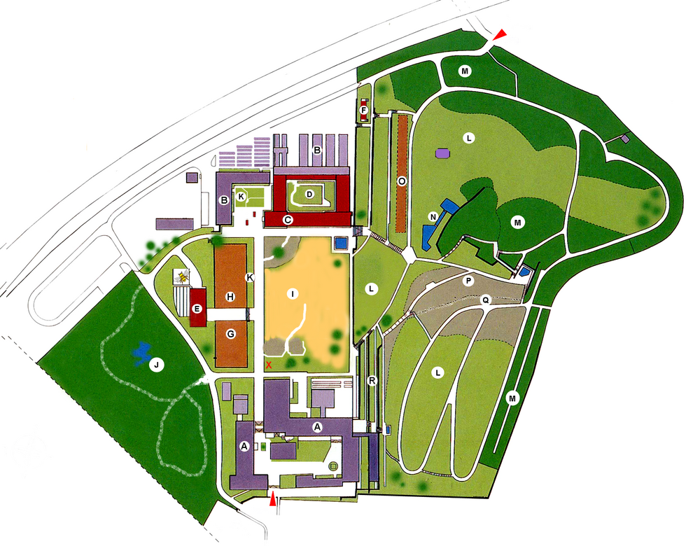

Startseite
Karte
Kontakt
Zurück zur Karte
Willkommen bei den Lehrpfäden des Botanischen Gartens Würzburg.
Bitte scannen sie einen QR-Code am Eingang oder an einer der Stationen, um einen Lehrpfad zu beginnen.
